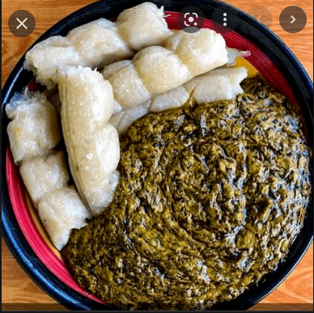

Okok Recipe

Description
Le Okok est un plat traditionnel du peuple Beti préparé avec les feulles de Gnetum sp. dont il porte le nom en langue locale. La plante est appelée Ikok par les Bassa, Okok chez les Béti ;
ingredients
- Okok
- palm nuts
- jgroundnut
- sugar
- salt
Steps
In a saucepan, cook the palm nuts and the Okok (wrapped in plastic).
Toast the peanuts very lightly and crush them
After cooking your palm nuts, crush them in a mortar, then extract the juice.
Put your palm nut juice and your Okok in your pan, let them simmer for at least 30 to 45 minutes.
Then add your previously crushed groundnut.
Let this mixture cook until it becomes a pasty mixture.
When the okok leaves seem almost cooked to you, add salt and sugar to them according to your convenience.
Laissez mijoter encore pendant quelques minutes.
Votre Okok est prêt.
Home page